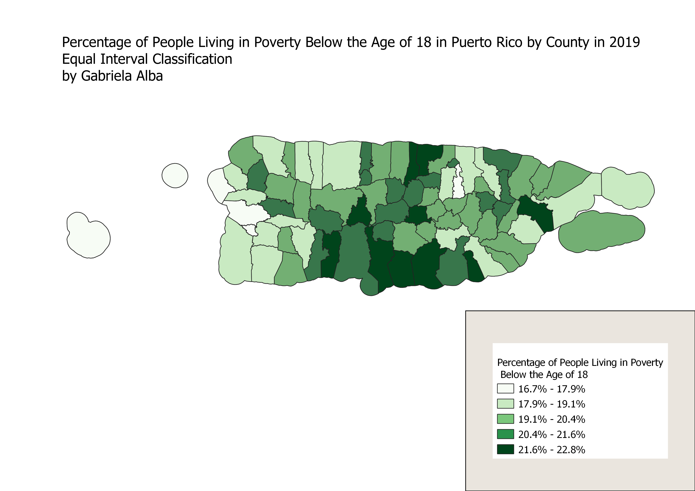
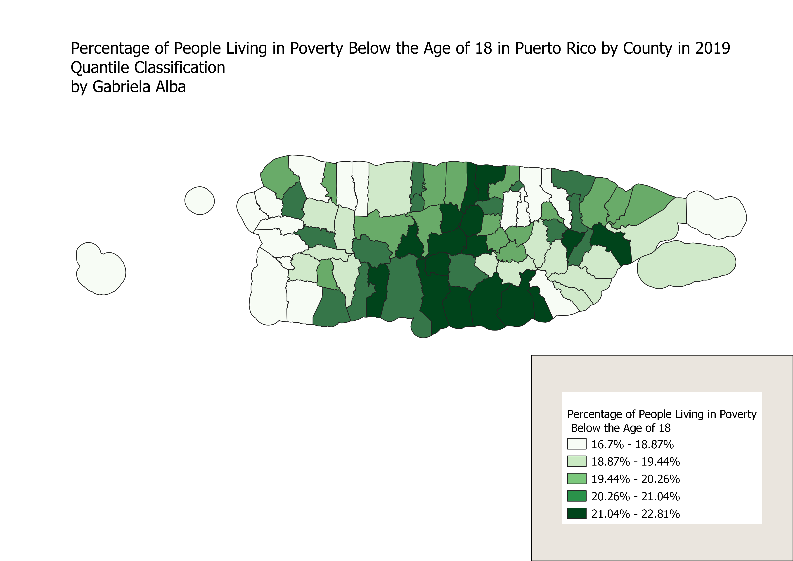
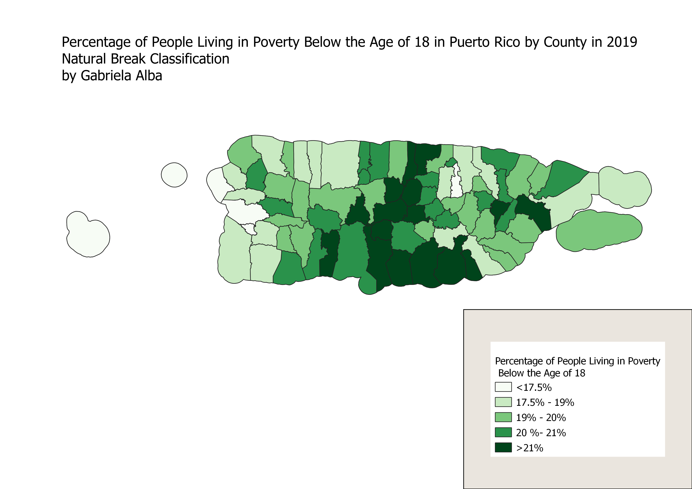

Homework 8: Census data ratios and categories
Gabriela Alba
This map depicts. The ratio I did and reason for using that ratio

Equal Interval Classification Scheme
Pros and Cons
Quantile Classification Scheme
Pros and Cons

Natural Breaks Classification Scheme
Pros and Cons

Data used for this project
Link to cleaned CSV dataset
Link to geoJSON